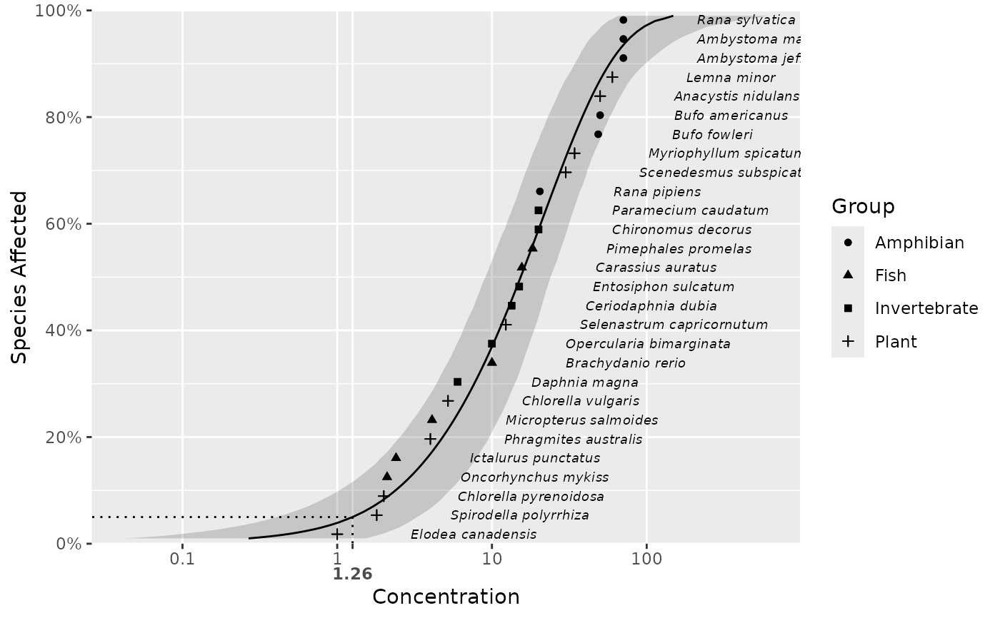

Plots species sensitivity data and distributions.
A data frame.
A data frame of the predictions.
A string of the column in data with the concentrations.
A string of the column in data with the right concentration values.
A string of the column in data with the labels.
A string of the column in data for the shape aesthetic.
A string of the column in data for the color aesthetic.
A number for the size of the labels.
A string of the column in pred to use for the linetype.
A string of the column in pred to use for the line color.
A string of the x-axis label.
A string of the x-axis label.
A flag specifying whether to estimate confidence intervals (by parametric bootstrapping).
A flag indicating whether to plot the confidence interval as a grey ribbon as opposed to green solid lines.
A count between 1 and 99 indicating the percent hazard concentration (or NULL).
The value to multiply the label x values by.
A named non-negative numeric vector of the left and right bounds for uncensored missing (0 and Inf) data in terms of the orders of magnitude relative to the extremes for non-missing values.
The x-axis breaks as one of:
NULL for no breaks
waiver() for the default breaks
A numeric vector of positions
ssd_plot(ssddata::ccme_boron, boron_pred, label = "Species", shape = "Group")
#> Warning: Ignoring unknown aesthetics: shape
